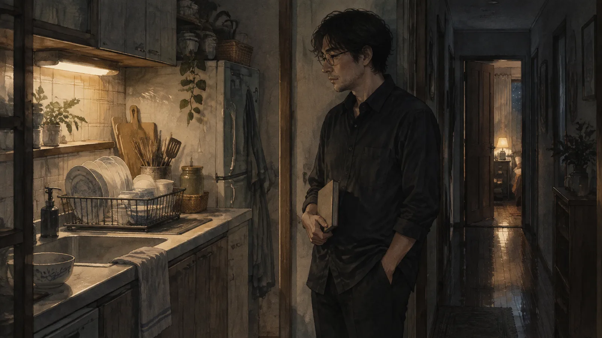
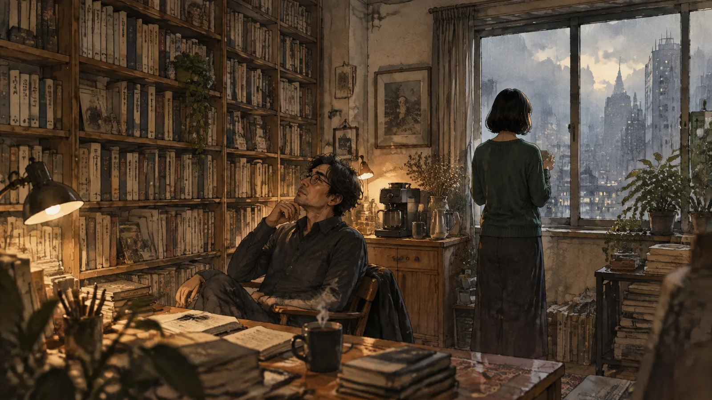
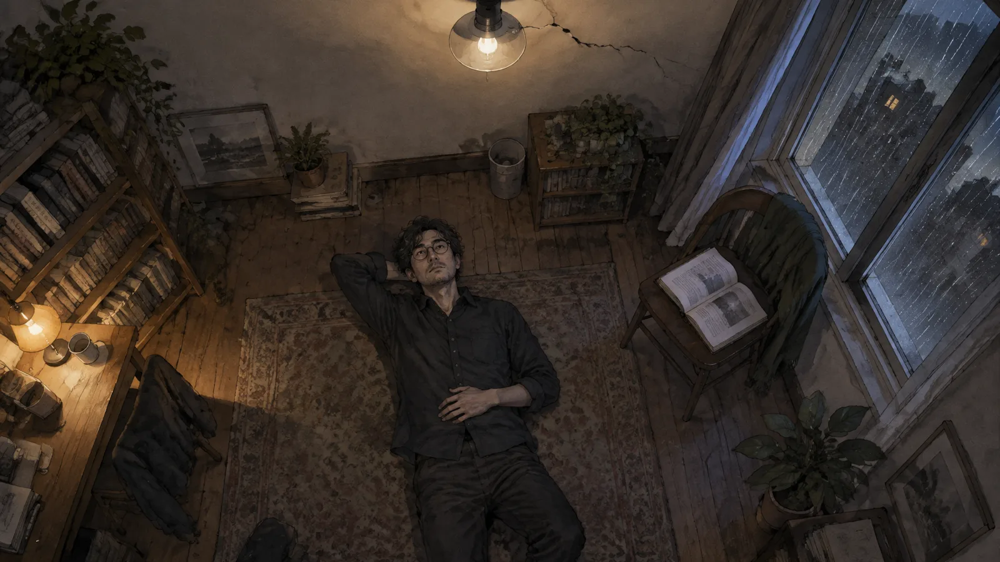
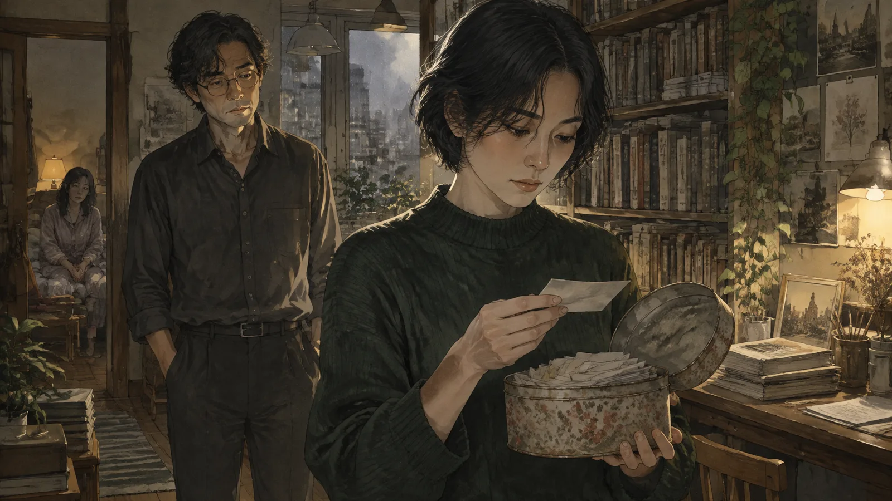

第一章包法利夫人
讀書會是星期三晚上七點半，在一間獨立書店的地下室。
周以哲是發起人。他四十二歲，在一間私立高中教國文，教了十六年。讀書會是他三年前開始的，一個月一本書，來的人從一開始的四個變成現在的十一個，都是三、四十歲的人，做設計的，做行銷的，一個牙醫，兩個公務員。他們讀的是「大家聽過可是沒有讀完的書」——《百年孤寂》，《卡拉馬助夫兄弟們》，《追憶似水年華》的第一冊。
那個月是《包法利夫人》。
他選這本書的時候沒有想太多。他在大學讀過，記得的只有結尾，砒霜，和一種說不上來的、對艾瑪的不耐煩。他重讀了一遍，準備帶討論。讀到一半的時候他停下來，坐在書桌前面，很久。
他的太太在廚房洗碗。她叫美琪，是護理師，做夜班，十點要出門。他們結婚十四年，有一個女兒，十二歲，在房間裡寫功課。廚房的水聲，女兒房間裡很小聲的音樂，他自己的呼吸。一切都很安靜，很正常，很好。
他看著書上的那一段：艾瑪站在窗前，看著外面的路，想著別的地方，想著「幸福」這個字，「像一隻在別的天空下才能活的鳥」。
他把書合上。他想，福樓拜真是殘忍。
星期三，讀書會來了十一個人。還有一個新的。
她坐在最靠門的位子，三十七、八歲，短髮，穿一件深綠色的毛衣，手裡拿的是法文原版。她是最後一個發言的。她說她叫沈曦，做翻譯，這本書她翻過一部分，「沒有出版，自己翻的」。她說她想聽聽看，別人怎麼讀艾瑪。
輪到她講的時候，她說了一句話。
「大家都說艾瑪是一個被浪漫小說害死的女人。」她說，「可是我覺得，福樓拜真正想寫的不是她的愚蠢。是她的認真。她是那個房間裡唯一一個真的相信生活應該是別的樣子的人。其他人都只是在過日子。」
周以哲看著她。地下室的燈是黃的，她的臉在燈下面很白，講話的時候手會輕輕地按著書的封面。
他說：「可是她的『別的樣子』，是從小說裡抄來的。」
「那又怎麼樣？」沈曦說，「你的呢？你想要的生活，是從哪裡來的？」
沒有人講話。
周以哲笑了一下，說：「這個問題我們下個月再討論。」大家笑了。散會以後，他在樓梯口跟她說謝謝妳來，她說她下個月還會來。
他回家的時候，美琪已經去上班了。女兒睡了。他站在廚房裡，看著洗好的碗，整整齊齊地放在架子上。他站了很久。

第二章別的樣子
他們是在第二個月開始講話的。
不是讀書會上。是讀書會之後——那次讀的是《異鄉人》，散會以後大家去附近的熱炒店，沈曦沒有去，周以哲也沒有去。他們在書店門口站著，講了四十分鐘。講卡繆，講翻譯，講她為什麼翻譯《包法利夫人》——「因為現有的譯本把艾瑪翻得太笨了。她不笨。她只是沒有別的語言可以用。」
「那妳給她什麼語言？」
「我還在找。」
他們交換了聯絡方式。「討論書用的」。
第一個星期，他們傳了七則訊息，都是關於書的。第二個星期，二十幾則，有一些不是。她說她今天翻譯翻到一個句子，翻了三個小時，翻不出來，句子是「他從來沒有像此刻這樣愛她，也從來沒有像此刻這樣確定他不會留下」。他說這個句子他懂。她問你懂哪一半。他沒有回。
第三個星期，他去了她的工作室。
不是家。是一間租的小房間，在一棟老大樓的七樓，一張桌子，一面書牆，一台咖啡機。她說她一個人住的地方太小，翻譯需要空間。「需要可以走來走去的空間。」她說，「翻譯是用腳的。」
他坐在她的椅子上，看她的書牆。法文的，英文的，中文的，很多都是他聽過可是沒有讀過的。她煮了咖啡。她站在窗邊，背對著他，說：「你為什麼辦讀書會？」

「因為我想跟人講書。」
「學校不能講？」
「學校講的是考試。」他說，「我教了十六年，我知道哪一段會考，哪一個字要解釋。我可以在課堂上講《紅樓夢》講得學生睡著。可是我不能講我讀完以後晚上睡不著的那些東西。」
「哪些東西？」
他想了很久。
「生活應該是別的樣子。」他說，「妳上次說的。艾瑪相信的那個。」
沈曦轉過身。她看著他，看了很久。
「周老師，」她說，「你結婚了。」
「我知道。」
「你有一個女兒。」
「我知道。」
「那你坐在這裡做什麼？」
他不知道。他真的不知道。他看著她，看著她的書牆，看著窗外台北的下午，忽然覺得自己四十二歲了，教了十六年書，讀了幾百本小說，可是他的生活裡沒有一個句子是他自己寫的。
「我在找一個語言。」他說。
她沒有笑。她走過來，在他面前站住。她說：「這句話是從書裡抄來的。」
「我知道。」他說，「可是我現在是真的。」
第三章語言
之後的四個月，他每個星期去兩次。
他跟美琪說是讀書會的「延伸討論」，說是幫學生的社團備課，說是去圖書館。美琪做夜班，白天睡覺，他們一天講不到十句話。她沒有問。他不知道她是不相信，還是不在乎，還是太累了。他沒有想太久。想太久會壞掉。
工作室裡發生的事，他不會用「外遇」這個字。他跟自己說，那是別的東西。是兩個人在一個房間裡，一個翻譯，一個讀，讀到某一段的時候停下來，看著對方，然後有一個人先伸手。是在書和書之間，在句子和句子之間，找到一個從來沒有人用過的字。
他覺得那是文學。
沈曦不這樣說。她從來不說那是什麼。她只是在他來的時候開門，在他走的時候關門。有一次他躺在她工作室的地板上——那裡沒有床，他們從來沒有在床上——看著天花板，說：「妳知道嗎，我覺得我這輩子第一次活著。」
她翻了一個身，看著他。
「你這句話，」她說，「羅道夫也說過。」
羅道夫。艾瑪的第一個情人。那個把她寫給他的信全部收在一個餅乾盒裡、然後用一封套話的信甩掉她的人。
「我不是羅道夫。」
「我知道。」沈曦說，「你比較像艾瑪。」
他愣住了。
「你才是那個相信生活應該是別的樣子的人。」她說，「不是我。我只是在翻譯。」
「那我是什麼？」
「你是一個四十二歲的國文老師，」她說，「在一個租來的房間的地板上，覺得自己在小說裡。」
她說得很平靜，沒有惡意，像在解釋一個句子的結構。可是那句話在他的身體裡待了很久。他回家的路上一直在想。他走進家門，女兒在客廳看電視，抬頭說爸你回來了，他說嗯。美琪在睡覺，門是關的。
他站在關著的門前面，想：我是在小說裡嗎？
他想：如果不是，那我在哪裡？
第四章電話
九月的一個下午，下大雨，他在她的工作室裡。
她在念書給他聽。法文的，他聽不懂，可是他喜歡聽——她念的時候聲音會變低，句子和句子之間會停很久，像在等什麼東西沉下去。她念的是第三部，艾瑪在盧昂跟萊昂幽會的那一段，每個星期四，她跟丈夫說是去上鋼琴課。
念到一半，他的手機響了。
美琪。
他看著螢幕。沈曦停下來，看著他。他接了。
「喂。」
「你在哪裡？」美琪的聲音，剛睡醒，啞的。
「圖書館。」他說，「幫學生找資料。」
沈曦沒有動。她坐在對面，書攤開在膝蓋上，看著他。
「晚上回來吃飯嗎？」
「回。」
「小蓉說學校要交一張家長的照片，你找一下。」
「好。」
「掛了。」
他把手機放下。工作室裡很安靜，雨打在窗戶上。沈曦看著他，看了很久，然後低下頭，繼續念。
她念的那一段，是艾瑪回到家，查理問她鋼琴課上得怎麼樣，她說很好。
他聽不懂法文。可是他知道她在念哪一段。
「妳故意的。」他說。
「我在念書。」沈曦說，「你在做什麼？」
他沒有回答。他躺在地板上，看著天花板。天花板有一道裂縫，很細，從燈的位置一直延伸到牆角。他每次來都看著它。他想，這道裂縫在他來之前就在了，在他走了以後也會在。

「妳有沒有想過，」他說，「這樣下去會怎麼樣？」
「你有想過嗎？」
「有。」
「想到什麼？」
他想到的是：沒有怎麼樣。就這樣。他每個星期來兩次，躺在這裡，看裂縫，聽她念書，然後回家，吃飯，找女兒的照片。他沒有想過離婚，沒有想過搬出來，沒有想過「以後」。他想的是這個房間。只有這個房間。
「我沒有想到什麼。」他說。
「那就是你想到的。」沈曦說。
她把書合上。
「艾瑪至少想過。」她說，「她想過要跟羅道夫私奔，想過要去義大利，想過一種完全不一樣的生活。她的想像是笨的，可是她有。你連笨的想像都沒有。你只想要一個房間。」
「那有什麼不好？」
「沒有不好。」沈曦說，「只是那不是文學。那是一個房間。」
✦
十月的讀書會，他們讀《安娜·卡列尼娜》。
沈曦坐在他對面。不是旁邊，是正對面，隔著一張桌子，十一個人中間。他帶討論，講安娜，講佛倫斯基，講那個火車站。他講得很好，比以前都好，大家都在點頭。
講到一半，做設計的那個女生忽然說：「周老師，你今天講安娜的時候，一直在看沈曦。」
大家笑了。周以哲也笑了。
「因為她有法文版。」他說，「我在看她的表情，看我有沒有講錯。」
大家又笑了。沈曦沒有笑。她看著他，很平靜，像在看一個句子。
散會以後，那個女生在樓梯口跟他說：「周老師，我隨便講的，你不要在意。」
「我沒有在意。」
「你的臉很紅。」她說。
他回家的路上，一直摸自己的臉。臉是熱的。他想，我講安娜的時候，在看她。我沒有發現。可是全部的人都看到了。
他想起那個房間的裂縫。他想，也許裂縫不只在天花板上。
第五章美琪
美琪是在十一月知道的。
不是抓到。是知道。周以哲後來想，她可能早就知道了，只是在等一個時間。那天是星期天，女兒去補習，美琪沒有上班，他們坐在餐桌的兩邊，中間是一壺茶。
「你星期三晚上，」美琪說，「不是去讀書會。」
他沒有否認。他發現自己沒有力氣否認。
「多久了？」
「四個月。」
美琪點點頭。她把茶倒進杯子裡，倒了兩杯，把一杯推到他面前。
「她是誰？」
「一個翻譯。」
「翻譯。」美琪重複了一次。她笑了一下，不是好笑的笑，「你們聊書。」
「對。」
「然後呢？」
他不知道怎麼回答。他看著茶杯，茶是熱的，冒著一點點白氣。
「以哲，」美琪說，「我做護理師十八年。我看過很多人死。我知道人快死的時候會說什麼。他們不會說『我後悔沒有多讀幾本書』。他們會說『我後悔沒有多陪誰』。」
「我知道。」
「你不知道。」美琪說，「你知道的都是書上寫的。你以為你懂，因為你讀過。可是我是站在床邊的那個人。」
她把茶喝了一口。
「我不會跟你吵。」她說，「我太累了，我明天還要上班。我只問你一件事：你要去哪裡？」
「什麼意思？」
「你在那個房間裡找到的東西，」美琪說，「是可以帶回來的嗎？還是只在那裡才有？」
他張開嘴，什麼都說不出來。
美琪站起來，把茶壺拿去廚房。她在水槽前面站了一會兒，背對著他。
「那本書，」她說，「《包法利夫人》。我讀了。你放在客廳，我讀了。」
他抬起頭。
「她最後吃砒霜。」美琪說，「不是因為她愛誰。是因為她欠錢。她的浪漫花光了她的錢，然後她死了。她的丈夫查理，那個大家都覺得又笨又無聊的人，他到最後都愛她。她死了以後他找到那些信，全部的信，他還是愛她。」
她轉過身。
「我不是查理。」她說，「我不會等你到最後。你自己選。」
第六章餅乾盒
他去找沈曦，是隔天。
他站在她工作室的門口，敲門。她開門的時候，手裡拿著一疊稿子，表情跟平常一樣。她讓他進去。他沒有坐下。
「美琪知道了。」他說。
「我知道。」
「妳知道？」
「你的臉上寫著。」沈曦說。她把稿子放在桌上，「你要說什麼？」
他想說很多。他想說他要離婚，他要搬出來，他要跟她一起住在一個有書牆的房間裡，翻譯，讀書，找那個語言。他想說這是他四十二年來唯一一次覺得自己在活著。他想說那句話——他知道那句話是抄來的，可是他還是想說。
他說出來的是：「妳要我怎麼做？」
沈曦看著他，看了很久。然後她走到書牆前面，從最上面的一格拿下一個東西。
一個餅乾盒。鐵的，很舊，上面印著褪色的花。

她打開。裡面是信。不是信——是他傳給她的訊息，她印出來的，一張一張，四個月，幾百張。
「你知道我為什麼印出來嗎？」她說。
他搖頭。
「因為我要翻譯它們。」沈曦說，「我要看看，如果把你說的話翻成另一種語言，還剩下什麼。」
她從盒子裡抽出一張。
「『我覺得我這輩子第一次活著』。」她念，「翻成法文，是羅道夫在第二部第九章說的話。一模一樣。」
她抽出另一張。
「『妳是我的語言』。這是萊昂說的。第三部第一章。」
再一張。
「『我不在乎別人怎麼看』。艾瑪。到處都是。」
她把盒子蓋上。
「周老師，」她說，「你四個月來跟我說的每一句話，我都找得到出處。不是你抄的。是你讀太多了，你以為那是你的。你在一本小說裡談戀愛，我是那本小說的譯者。你愛的不是我。是那個房間，那面書牆，那個『別的樣子』。」
「那妳呢？」他的聲音在抖，「妳愛的是什麼？」
沈曦沉默了很久。
「我愛的是翻譯。」她說，「我想看看一個活的人的話，翻出來是什麼樣子。現在我知道了。」
她把餅乾盒遞給他。
「拿回去。」她說，「這是你的。」
第七章查理
他沒有拿。
他走出那棟老大樓，走到街上。十一月，台北在下雨，很小的雨，不用撐傘。他走了很久，走過書店，走過學校，走到河邊。他在河邊坐下來。
他想起那本書的結尾。不是艾瑪的死。是之後。查理找到那些信，讀了，然後——福樓拜是這樣寫的——他沒有生氣。他只是變得很安靜。他把自己關起來，不工作，不出門。有一天他坐在花園的長椅上，手裡抓著一綹艾瑪的頭髮，死了。
他一直覺得那是全書最可憐的一段。一個又笨又無聊的男人，被騙了一輩子，到死都不知道自己被騙了什麼。
可是他現在坐在河邊，忽然想，也許福樓拜不是這個意思。
也許查理是全書唯一一個真的愛過誰的人。艾瑪愛的是小說，羅道夫愛的是自己，萊昂愛的是「愛情」這個概念。查理愛的是一個人。一個具體的、會偷情、會欠錢、會吃砒霜的女人。他愛她，不是因為她像什麼，是因為她是她。
而他，周以哲，四十二歲，讀了幾百本小說的人——他愛的是什麼？
他想起美琪站在水槽前面，背對著他，說：我不會等你到最後。
他想起沈曦說：你愛的是那個房間。
他想起女兒抬頭說：爸你回來了。
他坐在河邊，坐到天黑。雨停了。他站起來，往家的方向走。
✦
他沒有再去那個工作室。
他也沒有回家——不是不回，是回去了，可是不一樣了。美琪沒有趕他走，也沒有原諒他。她繼續上夜班，他繼續教書，他們在同一個屋簷下，講話比以前多一點，可是每一句都很小心，像在一間有很多玻璃的房間裡走路。
讀書會他停了。他跟大家說學校太忙。有幾個人問他什麼時候再開，他說再看看。
沈曦沒有再聯絡他。他在書店看到一本新出的《包法利夫人》譯本，譯者是她。他翻開，翻到第二部第九章，羅道夫說「我這輩子第一次活著」的那一段。
她的譯法跟他讀過的所有版本都不一樣。她翻成：「他說，他從來沒有活過。她信了。」
他站在書店裡，看著那一行字，看了很久。
他沒有買。他把書放回架上。
尾聲
一年後，美琪跟他提離婚。
不是因為那件事。她說是，也不是。她說她做了十八年夜班，她想試試看白天的生活，一個人的。她說她不恨他，她只是不想再等一個人從別的房間回來。
他說好。
女兒十三歲了，跟美琪住，週末來他這裡。他搬到一間小公寓，一張桌子，一面書牆——不是很大，可是有。他還在教書。他還是會在課堂上講《紅樓夢》講到學生睡著。
有一天女兒在他的書牆上看到那本書。
「爸，這本好看嗎？」
他看著封面。
「不好看。」他說，「可是要讀。」
「為什麼？」
他想了很久。
「因為讀完以後，」他說，「妳會知道，有些人把小說當成生活。有些人把生活當成小說。妳要小心，不要變成其中一種。」
女兒沒有聽懂。她把書放回去，去看電視了。
他坐在桌前，翻開一本空白的筆記本。他想寫一個句子。一個他自己的句子，不是從任何一本書裡來的。
他寫了一行，劃掉。又寫一行，劃掉。
寫到第七行的時候，他停下來。他看著那一行字，看了很久。那一行是：
「他從來沒有像此刻這樣確定，他不知道自己在哪裡。」
他沒有劃掉。
（完）
留言板
看不懂、想補充、發現錯誤都歡迎留言；填個暱稱就能發。